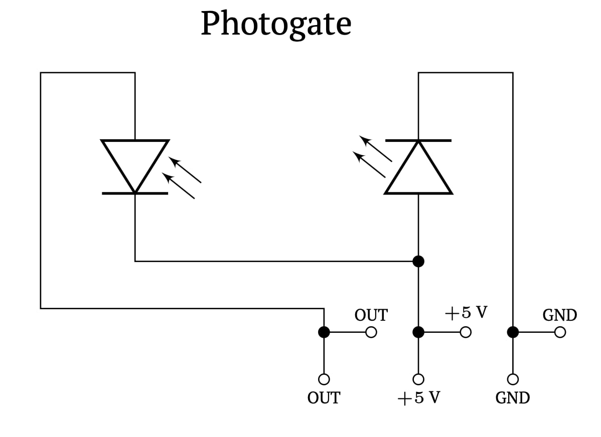
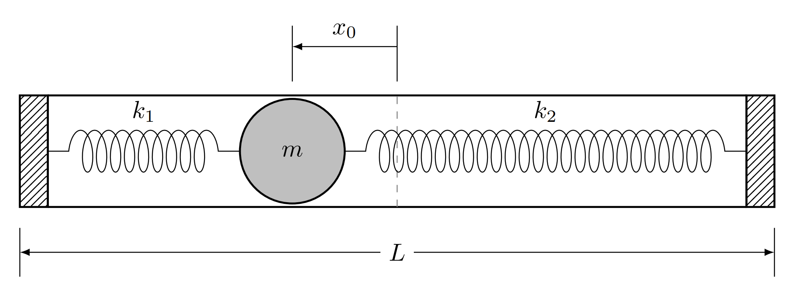
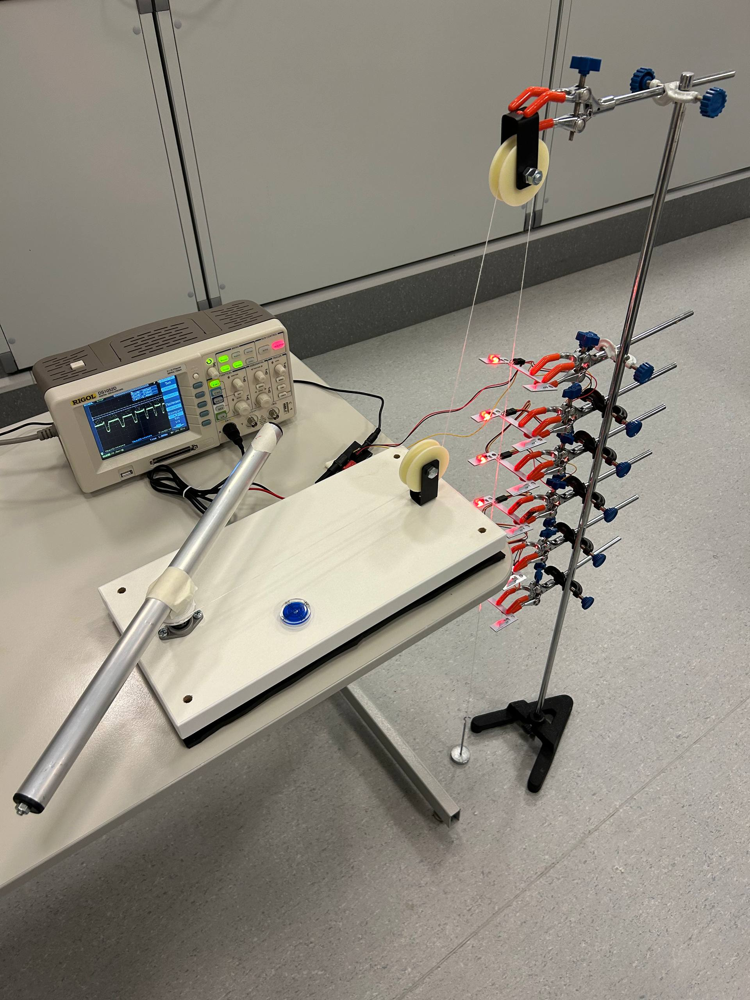
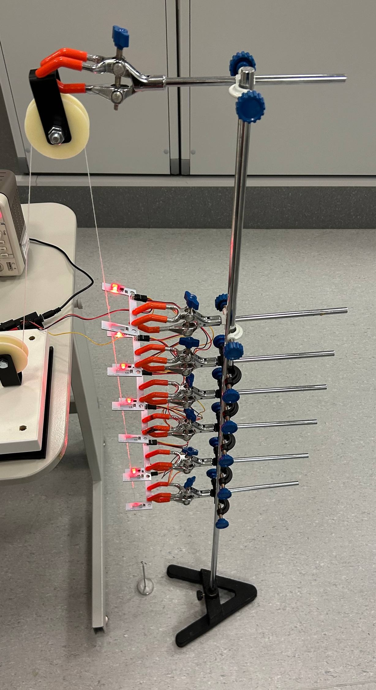
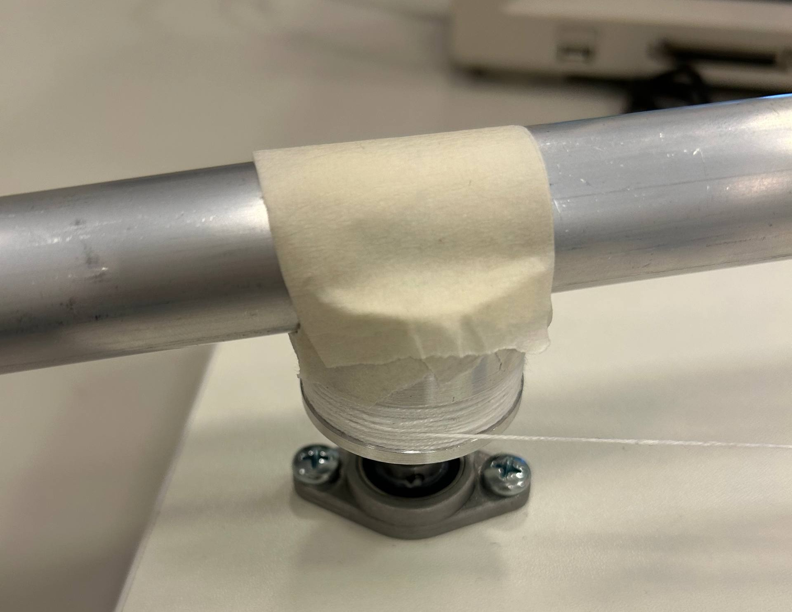
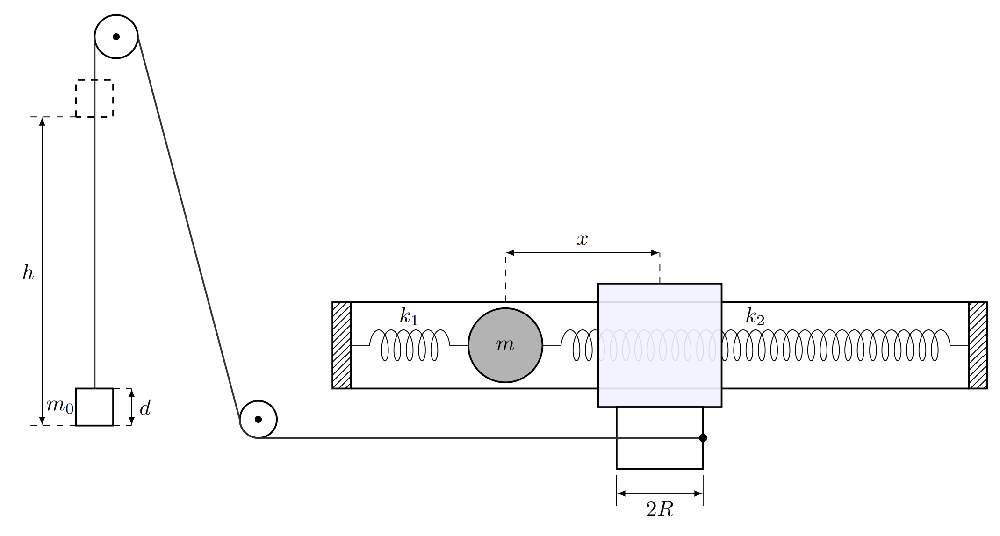
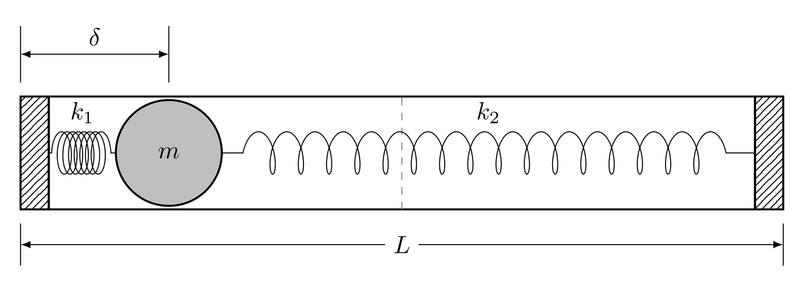
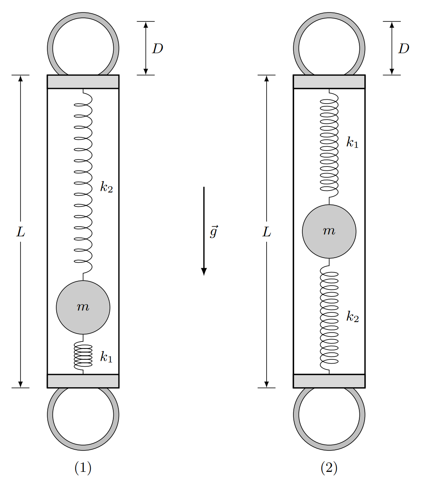
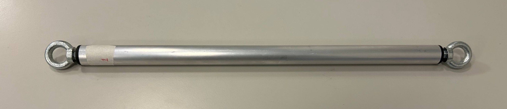

Fig. 1.
Y26 (2026) — English translation
Equipment: Mechanical black box Photogate (6 pcs.) Board for photogates Female-female wires for photogates Power supply for photogates Oscilloscope BNC banana wire Tripod Foot (7 pcs.) Coupling for attaching the foot (7 pcs.) Fixed block with fastening (2 pcs.) (one of the blocks is fixed on the table) Table on an anti-vibration mat (rubber sheet). Level Cylindrical stand for black box (fixed to the table) Thread (additional thread can be provided upon request) Scissors Anchor weight $40~г$ Anchor weight $100~г$ Pancake weight $100~г$ Masking tape Ruler $50~см$ Vernier calipers Tape measure Scales Nut with loop (2 pcs) Oscillation axis Clamp Stopwatch
Pinout diagram on photogate and board


The photogate consists of an LED and a photodiode and has three pairs of output pins (see photo). The photogate pins are connected by female-to-female wires to the corresponding pins on the photogate board. An oscilloscope is connected to the banana outputs of the photogate board, and a power supply is connected to the remaining output. With this connection, the photogate LED lights up brightly in red, and the oscilloscope records a signal proportional to the intensity of radiation incident on the photogate photodiode. To carry out the experiment, connect the outputs of all photogates in parallel and connect one of them to the photogate board as described above. In this configuration, the oscilloscope signal is proportional to the total light intensity on all photodiodes. Attention! Check that the oscilloscope signal changes when the light between the LED and the photodiode on each photogate is blocked. If the change is less than 15 mV, contact the duty officer and clearly show it.
To carry out the experiment, connect the outputs of all photogates in parallel and connect one of them to the photogate board as described above. In this configuration, the oscilloscope signal is proportional to the total light intensity on all photodiodes.
Attention! Check that the oscilloscope signal changes when the light between the LED and the photodiode on each photogate is blocked. If the change is less than 15 mV, contact the duty officer and clearly show it.
Black box diagram

The purpose of this experiment is to determine the parameters of the issued mechanical black box. A mechanical black box (MBB) is a homogeneous cylindrical tube. Inside it is a small weight attached to two springs, as shown in the picture above. Neglect the masses of the springs and their unstretched lengths throughout the experiment. The tube is closed at the ends with identical plugs. There is friction between the weight and the inner walls of the tube! We will use the following notation: Weight of the weight $m$ Mass of the MC without weight $M$ Length of the aluminum tube $L$ All lengths are measured from the edge of the aluminum tube Coordinate of the weight relative to the geometric center of the box $x$ Coordinate of the weight in equilibrium $x_0$. We will consider the equilibrium position of the weight to be its position when the MCH is horizontal and the friction force is zero. Stiffness of springs $k_1$ and $k_2$ ($k_1 > k_2$) Gravity acceleration $g = 9.8~\text{м/с}^2$
The purpose of this experiment is to determine the parameters of the issued mechanical black box. A mechanical black box (MBB) is a homogeneous cylindrical tube. Inside it is a small weight attached to two springs, as shown in the picture above. Neglect the masses of the springs and their unstretched lengths throughout the experiment. The tube is closed at the ends with identical plugs.
There is friction between the weight and the inner walls of the tube!
We will use the following notation:
Attention! Do not shake or drop the MCH! The weight may come off the springs! If your MFC appears to be broken, notify the audience person immediately!
Starting from the second, the breakdown of the MCH leads to a penalty of 1 point!
Для измерения массы грузика соберем следующую установку: Убедитесь, что столик с подставкой стоит на антивибрационном коврике. Установите штатив рядом со столом, и закрепите на конце лапку с блоком так, как показано на фото. С помощью малярного скотча надежно закрепите МЧЯ на подставке. Геометрический центр МЧЯ должен совпадать с осью подставки! Закрепите на подставке нить и намотайте несколько витков нити в паз на подставке. Нить не должна проскальзывать по подставке! Свободный конец нити пропустите через систему блоков и закрепите на нем якорь массой $100~г$. Нити должно быть достаточно для касания якорем пола. Закрепите на штативе по всей его длине 6 лапок. Соедините фотогейты ПАРАЛЛЕЛЬНО. Каждый следующий фотогейт должен быть подключен к выходам предыдущего: самый нижний — 6-ой подключен в 5-ый, …, 2-ой в 1-ый. Это обеспечит параллельное соединение и корректную работу схемы. Избегайте слишком сильной затяжки фотогейта в лапке. При слишком большом давлении фотогейт может сломаться, и Вы будете дисквалифицированы с тура, а Ваша работа будет аннулирована! Подключите 1-ый фотогейт к плате для фотогейтов. Подключите осциллограф и блок питания к плате для фотогейтов. При корректном подключении на каждом фотогейте должен ярко загореться светодиод. У Вас должна получиться установка показанная на фото. Перейдем к юстировке. Юстируйте установку как можно более точно, т.к. малейшее отклонение может привести к серьезному искажению полученной массы! Используя уровень, закрутите ножки столика так, чтобы он был горизонтален и устойчиво стоял на всех 4-ех ножках. Любые малые отклонения от горизонтальности и неустойчивости могут привести к большим вибрациям в процессе эксперимента! Медленно вращая МЧЯ, двигайте якорь по-вертикали. Следите, чтобы нить наматывалась в специальный паз. Установите фотогейты так, чтобы якорь свободно проходил через них, прерывая свет, идущий от светодиода к фотодиоду. Якорь не должен задевать фотогейты! Будьте осторожны, при отпускании якоря МЧЯ начинает быстро вращаться! Включите осциллограф. Используя режим единичного измерения, убедитесь что сигнал изменяется при прохождении каждого из фотогейтов. Изменение сигнала должно быть не менее $15~мВ$. Если изменение сигнала меньше этого значения, сместите фотогейт ближе к линии движения якоря. Обязательно убедитесь, что якорь все еще не задевает фотогейт! Внимание! Будьте предельны осторожны! В процессе движения МЧЯ будет раскручиваться до очень больших скоростей! Неосторожное обращение с ним может привести к травме или поломке установки! В любой момент времени вокруг МЧЯ должно быть достаточно свободного пространства для его вращения! Неаккуратное отпускание грузика или натяжение нити может привести к его внезапному раскручиванию! МЧЯ должен быть надежно закреплен скотчем — МЧЯ и подставка должны двигаться только как единое целое. Плохое крепление может привести к ужасным последствиям!
Для измерения массы грузика соберем следующую установку:
У Вас должна получиться установка показанная на фото.
Перейдем к юстировке. Юстируйте установку как можно более точно, т.к. малейшее отклонение может привести к серьезному искажению полученной массы!

Installed photogates

Fastening the MCH and the thread in the groove on the stand


Let's move on to the experiment. In this part we will use the following notations: $d$ - length of the anchor, $R$ - radius of the stand, $h$ - distance traveled by the anchor, $\omega$ - angular velocity of rotation of the MCJ, $v$ - speed of movement of the anchor.
Attach a mass of mass $m_0\approx100~г$ as an anchor. Make sure that as the armature passes through each photogate, changes in readings are recorded on the oscilloscope. Note: To change the length of the anchor $d$, you can stick a strip of masking tape to it.
Note: To change the length of the $d$ anchor, you can stick a strip of masking tape to it.
Attention! After each change in the position of the photogates, make sure that the anchor does not touch them when moving!
Let us consider the theoretical description of the obtained dependence. Let us denote the distance from the outer edge of the aluminum pipe to the center of mass of the weight, when it is pushed all the way to one of the edges, as $\delta$. Further, in all parts, consider this distance known $\delta = 60~мм$. When the MCN rotates slowly enough, the bob does not move from its resting equilibrium position due to friction between it and the tube. When the MCN rotates fast enough, the weight rests against the plug and is located close to the end of the MCN (at a distance $\delta$) due to the weakness of the springs. The transition from slow to fast mode takes a short time and is described by complex equations, so it will not be studied in this problem. The mass of the blocks can be neglected in this experiment. For further description, it is necessary to take into account the presence of friction in the blocks (the blocks create a frictional moment against rotation). For our system, the dry friction model is applicable, so it is enough to introduce the coefficient $\alpha=0.8$ - the ratio of the thread tension force before and after the block system.
Let us denote the distance from the outer edge of the aluminum pipe to the center of mass of the weight, when it is pushed all the way to one of the edges, as $\delta$. Further, in all parts, consider this distance known $\delta = 60~мм$.
When the MCN rotates slowly enough, the bob does not move from its resting equilibrium position due to friction between it and the tube. When the MCH rotates fast enough, the weight rests against the plug and is located close to the end of the MCh (at a distance $\delta$) due to the weakness of the springs. The transition from slow to fast mode takes a short time and is described by complex equations, so it will not be studied in this problem.
The mass of the blocks can be neglected in this experiment. For further description, it is necessary to take into account the presence of friction in the blocks (the blocks create a frictional moment against rotation). For our system, the dry friction model is applicable, so it is enough to introduce the coefficient $\alpha=0.8$ - the ratio of the thread tension force before and after the block system.

Let us denote: $I_1$ is the moment of inertia of the weight inside the MCJ relative to the center of mass of the weight, $I_B$ is the total moment of inertia of all rotating bodies except the weight itself relative to the axes of rotation.
In the future, consider that in the selected ranges of slow and fast rotation the theory obtained in paragraphs B3-B4 is correct, and also that these ranges are the same for different armature masses. Attach an anchor with mass $m_{01} \approx 40~г$ to the installation. The anchor has different dimensions, so make sure that the anchor does not touch the photogates when moving.
Attach an anchor with mass $m_{01} \approx 40~г$ to the installation. The anchor has different dimensions, so make sure that the anchor does not touch the photogates when moving.
Take an anchor with mass approximately $100~г$ and add a pancake with mass $100~г$ to it. The mass of the resulting anchor will be denoted by $m_{02} \approx 200~г$. Again, make sure that the armature moves freely through the photogates.
Attention! It is prohibited to unscrew the hex nuts that are initially screwed onto the ends of the MCH! In this part, we will conduct two experiments, suspending the MCN like a rigid pendulum at different ends, as shown in the figure. Screw the nuts and loops on both sides of the ball and secure it like a rigid pendulum.
In this part, we will conduct two experiments, suspending the MCN like a rigid pendulum at different ends, as shown in the figure. Screw the nuts and loops on both sides of the ball and secure it like a rigid pendulum.

MCHYA with screwed loops

Here $D$ is the distance from the axis of vibration to the upper edge of the aluminum pipe (see figure above). Let us denote the moment of inertia of the MCN without a weight relative to the oscillation axis as $I_0$.
Let us denote the moment of inertia of the MCN without a weight relative to the oscillation axis as $I_0$.
Attention! Take measurements with the greatest possible accuracy, because... this is important to obtain an accurate result.
Let us denote $\Delta x = \left| x - x_0\right|$ the deviation of the center of mass of the weight from the equilibrium position with coordinate $x_0$.
Source: https://pho.rs/p/5019